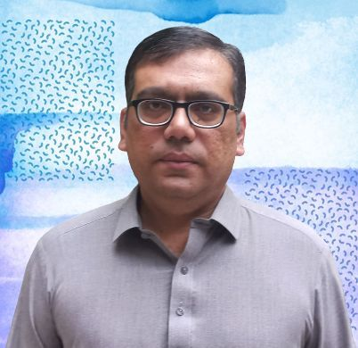

Researcher | Scientist | Academician
M. Irfan Uddin is affiliated with the Department of Computer Science, Abdul Wali Khan University Mardan (AWKUM), Khyber Pakhtunkhwa, Pakistan. With a solid educational foundation and over two decades of teaching and research experience at renowned academic institutions, he possesses a robust academic and research background across diverse domains of computer science. He is an active member of several esteemed scientific societies, including IEEE, ACM, HiPEAC, CSTA, IAENG, KSS, and Science-i. He has played a leading role in organizing numerous national and international seminars, workshops, and conferences. His research contributions include over 130 research articles published in JCR and Scopus/ISI-indexed journals, as well as national/international conferences, in addition to three authored books published by reputed publishers. He has also published two patents with the United States Patent and Trademark Office. He has served as (PI/Co-PI/Collaborator) in more than 10 nationally/internationally funded research projects. Additionally, he actively contributes as a reviewer, editorial board member, and technical program committee member for several prestigious journals and conferences. His research interests include machine learning, data science, artificial neural networks, deep learning, convolutional neural networks, recurrent neural networks, attention models, reinforcement learning, generative adversarial networks, generative AI, Agentic AI, computer vision, image processing, machine translation, natural language processing, speech recognition, big data analytics, parallel programming, Multi-core, Many-core, and GPUs.
| Item | Value |
|---|---|
| Teaching and Research Experience | > 20 Years |
| Accumulative Impact Factor | > 350 |
| Citations | > 4000 |
| h-index | 36 |
| Number of Published Impact Factor Papers | 110 |
| Number of Published Scopus/ISI Indexed Papers | 7 |
| Number of Published Conference Papers | 8 |
| Number of Published Books | 3 |
| Number of Published Patents | 2 |
| Research Projects (PI/Co-PI/Collaborator) | > 10 |
| Conferences Organized (National/International) | > 10 |
| Top 2% Scientist (2025) | Elsevier–Stanford List 2025 |
| Top 2% Scientist (2024) | Elsevier–Stanford List 2024 |